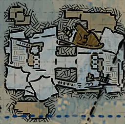
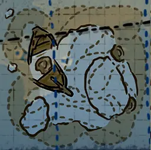

水图
浮岛 A (ShipGraveyard_FloatingIsland)ShipGraveyard_FloatingIsland_D.json
ShipGraveyard_FloatingIsland.webp (缓存) | 找到 1 个位置 | 范围: ±1600
↻1

-990
海洋要塞 B (ShipGraveyard_SeaFortress_02)ShipGraveyard_MistWatch_D.json
ShipGraveyard_MistWatch.webp (缓存) | 找到 1 个位置 | 范围: ±1600
↻3

-1021
岩岛 (ShipGraveyard_RockIsland)ShipGraveyard_RockIsland_D.json
ShipGraveyard_RockIsland.webp (缓存) | 找到 1 个位置 | 范围: ±1600
↻3

-986
海星谷 (ShipGraveyard_StarfishValley)ShipGraveyard_StarfishValley_D.json
ShipGraveyard_StarfishValley.webp (缓存) | 找到 1 个位置 | 范围: ±1600
↻0

-1624
沉没之船 (ShipGraveyard_SunkenShip_01)ShipGraveyard_SunkenShip_01_D.json
ShipGraveyard_SunkenShip_01.webp (缓存) | 找到 1 个位置 | 范围: ±1600
↻1

-2120
海底洞穴 A (ShipGraveyard_UnderSeaCave_01)ShipGraveyard_UnderSeaCave_01_D.json
ShipGraveyard_UnderSeaCave_01.webp (缓存) | 找到 1 个位置 | 范围: ±1600
↻2

-2976
吊船 (HangingShip)ShipGraveyard_HangingShip_HR_D.json
ShipGraveyard_HangingShip.webp (缓存) | 找到 2 个位置 | 范围: ±3200
↻3

-541
-969
钉手的藏身处 (ShipGraveyard_BladehandRefuge)ShipGraveyard_BladehandRefuge_D.json
ShipGraveyard_BladehandRefuge.webp (缓存) | 找到 1 个位置 | 范围: ±3200
↻0

-1345
骷髅岛 (ShipGraveyard_SkullIsland)ShipGraveyard_SkullIsland_D.json
ShipGraveyard_SkullIsland.webp (缓存) | 找到 1 个位置 | 范围: ±3200
↻1

-1101